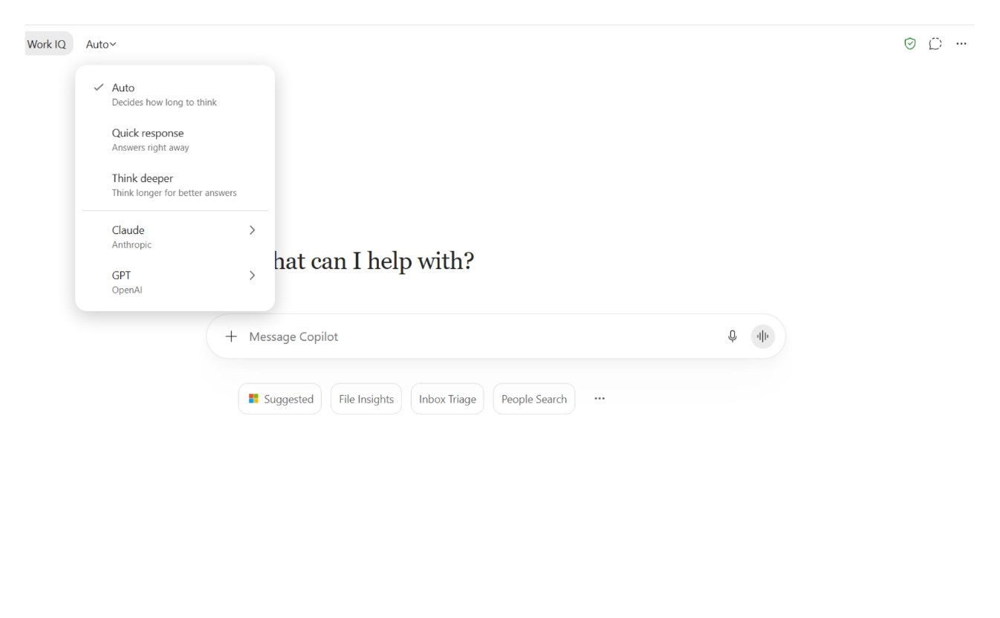
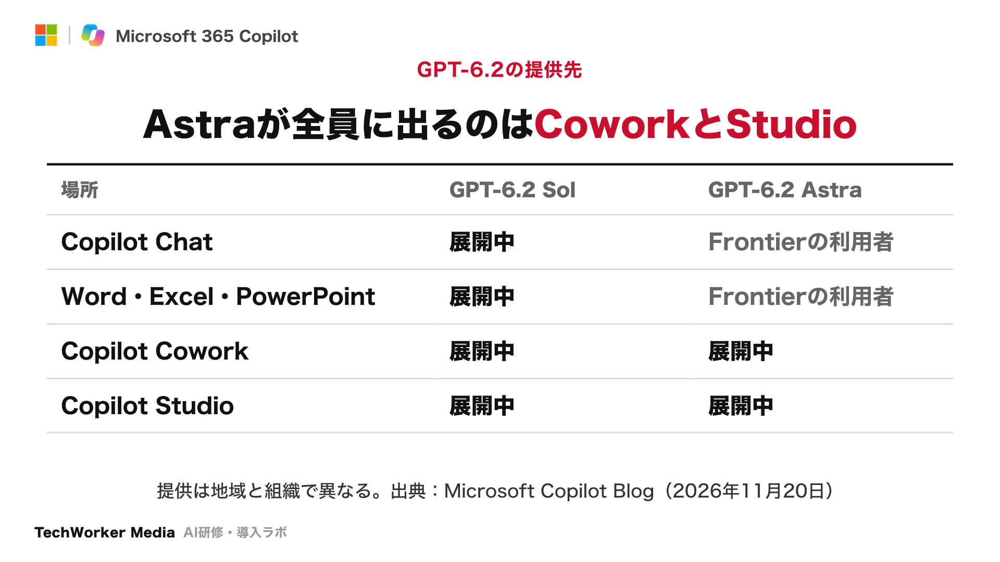
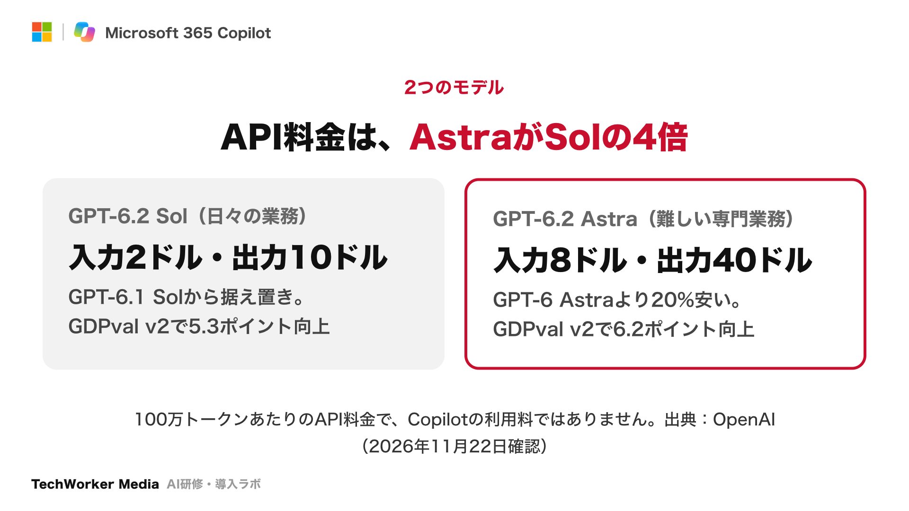
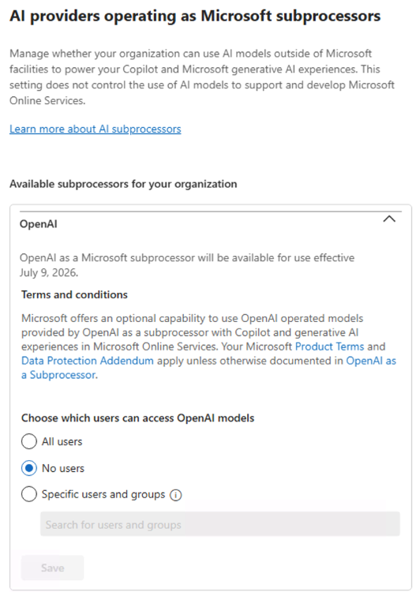
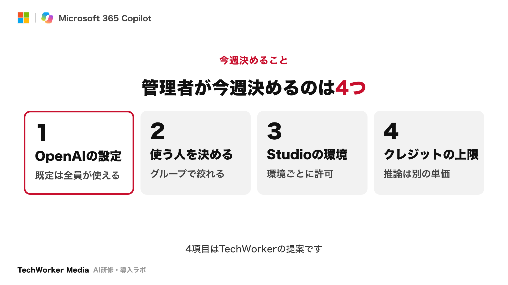

Microsoftは2026年11月20日、OpenAIの新しいモデルGPT-6.2 SolとGPT-6.2 AstraをMicrosoft Copilotで使えるようにしたと発表しました。管理者に関わる要点は次の3つです。
- 提供先：SolはCopilot Chat、Copilot Cowork、Copilot Studio、Word・Excel・PowerPointのCopilotで、順に使えるようになります。AstraはCoworkとCopilot Studioからです。
- 設定：OpenAIが運用するモデルは、対象の法人では2026年7月24日から既定で全員が使える設定です。止めるか絞るかはMicrosoft 365 管理センターで決めます。
- データの扱い：OpenAIが運用するモデルは、国内でデータを処理する約束の対象から外れています。
Microsoftのブログ、Microsoft Learn、OpenAIの発表（2026年11月22日確認）をもとに、日本の会社の管理者が決めることを整理します。

出典：Microsoft Inside Track「Charting your course in Copilot: Picking the right model, mode, and effort」（2026年11月19日）の画面。Copilotの左上のメニューから、ClaudeとGPTのモデルを選びます（2026年11月22日に撮影）
GPT-6.2は、Copilotのどこで使えますか？
GPT-6.2 SolはCopilot Chat、Cowork、Copilot Studio、Word・Excel・PowerPointで展開中です。GPT-6.2 Astraが全員に出るのは、CoworkとCopilot Studioです。

Microsoftは11月20日のブログで、Astraの提供先を次のように書いています。
原文“GPT-6.2 Astra is rolling out worldwide to eligible users in Copilot Cowork and Copilot Studio.”
日本語訳GPT-6.2 Astraは、Copilot CoworkとCopilot Studioで、対象となる利用者に向けて世界で順に展開しています。
| 場所 | GPT-6.2 Sol | GPT-6.2 Astra |
|---|---|---|
| Copilot Chat | 展開中 | Frontierの利用者だけ |
| Word・Excel・PowerPointのCopilot | 展開中 | Frontierの利用者だけ |
| Copilot Cowork | 展開中 | 展開中 |
| Copilot Studio | 展開中 | 展開中 |
出典：Microsoft Copilot Blog（2026年11月20日）。Copilot Studioの提供モデルの一覧には、2つとも一般提供（GA）と載っています（Microsoft Learn、2026年11月22日確認）
Frontierは新しい機能を先に使えるMicrosoftの先行提供の枠です。提供の状況は地域と組織で違う、とMicrosoftは書いています。日本での提供時期の記載はありません。
Work IQは社内のファイル、会議、チャットから回答のもとになる情報を集めます。ブログによると、各利用者がもともと開ける情報だけを使います。モデルを替えても、見える情報の範囲は変わりません。
SolとAstraは、何が違いますか？
Solは日々の業務向けの効率のよいモデル、Astraは難しい専門業務向けのモデルです。OpenAIのAPI料金では、AstraはSolの4倍です。

OpenAIの発表から、2つのモデルの違いを表にしました。料金はOpenAIのAPIの物で、Copilotの利用料ではありません。
| 項目 | GPT-6.2 Sol | GPT-6.2 Astra |
|---|---|---|
| 位置づけ | 日々の業務に向く、効率のよい汎用のモデル | 最も難しいプロジェクトに向くモデル |
| API料金（100万トークンあたり） | 入力2ドル、出力10ドル | 入力8ドル、キャッシュ済み入力0.40ドル、出力40ドル |
| 前のモデルからの料金 | GPT-6.1 Solから据え置き | GPT-6 Astraより20%安い。キャッシュ済み入力は60%安い |
| GDPval v2（OpenAIの評価） | GPT-6.1 Solより5.3ポイント向上 | GPT-6 Astraより6.2ポイント向上。出力トークンは22%減 |
出典：OpenAI「GPT-6.2 Astra と Sol のご紹介」（2026年11月22日確認）。GDPval v2は、コンサルティングや金融などの実際の仕事をもとにしたOpenAIの社内の評価です
OpenAIは、Astraが作るスライド、表計算、文書について、渡したテンプレートや各分野の慣行に、より忠実に従うと説明しています。Copilotでは、AstraはCoworkとCopilot Studioで使えます。資料づくりをCoworkに任せるときに、この違いを試せます。
Copilotの中で、どの依頼をどちらのモデルで処理するかを、Microsoftは公表していません。比べるときは、自社の同じ依頼を両方のモデルで試します。GPT-6.2をChatGPTで使う場合の契約と料金はChatGPTの法人契約と料金にまとめています。
利用者は、どこでモデルを選びますか？
Copilotの画面の左上にあるメニューで選びます。既定はAutoで、ClaudeとGPTはその下に並びます。
冒頭の画面のとおり、メニューにはAuto、Quick response（すぐ答える）、Think deeper（長く考える）と、AnthropicのClaude、OpenAIのGPTが並びます。Microsoftの社内向けの解説は、選べるモデルの条件を次のように書いています。
原文“The models you see depend on your license, your organization’s settings, and your region.”
日本語訳表示されるモデルは、ライセンス、組織の設定、地域によって変わります。
GPT-6.2がメニューにどの名前で出るかは、11月22日の時点で公式の資料に書かれていません。展開が進んだら、自社のテナントの画面で確かめます。
研修では、まずAutoのまま使い、答えが浅いときにThink deeperやモデルの切り替えを試す順で教えると、迷う人が減ります。ここはTechWorkerの提案です。
管理者は、何を設定しますか？
Microsoft 365 管理センターで、OpenAIが運用するモデルを使える人を決めます。対象の法人では、何もしなければ全員が使える設定です。

出典：Microsoft Learn「OpenAI as a subprocessor for Microsoft Online Services」の画面。OpenAIのモデルを使える人を、全員・使わない・指定した人とグループから選びます（2026年11月22日に撮影）
Microsoftの発表は利用の管理の方法として、OpenAIをMicrosoftの再委託先（サブプロセッサー）として使う設定のページを案内しています。そのページには既定の扱いが次のように書かれています。
原文“As of July 24, 2026, OpenAI operated models are enabled for all users for eligible commercial customers, unless you specifically disable the use of OpenAI operated models by selecting No users”
日本語訳2026年7月24日から、対象の法人のお客様では、OpenAIが運用するモデルが全員に有効になっています。No usersを選んで止めない限り有効です。
設定の手順は次のとおりです。AI管理者かグローバル管理者の役割が要ります。
- Microsoft 365 管理センターで、Copilot、Settings、View allの順に開きます。
- AI providers operating as Microsoft subprocessorsを選びます。
- OpenAIを選び、使える人をAll users、No users、Specific users and groupsから選んで保存します。
Copilot Studioでエージェントに使うには、もう1か所の設定が要ります。Power Platform 管理センターで、管理、環境、対象の環境、設定、製品、機能の順に開き、モデルの提供元ごとにオンにします。Microsoft 365 管理センターで許可していない提供元は、ここで選べません。
データの扱いで、Microsoft Learnに書かれている点は次の4つです。
- 国内での処理：OpenAIが運用するモデルは、国内でデータを処理する約束の対象から外れています。
- 契約：Microsoftの製品条項とデータ保護補遺（DPA）が適用されます。著作権の補償（Customer Copyright Commitment）も、CopilotとCopilot Studioで適用されます。
- EUデータ境界：含まれます（別に記載のある物を除く）。
- 政府向けクラウド：GCC、GCC High、DoD、ソブリンクラウドでは使えません。
Microsoft自身が運用するGPTのモデル（Azure OpenAI）は、この設定では止まりません。設定を止めて使えなくなるのは、OpenAIが運用するモデルを前提にした機能とモデルです。
Frontierに参加しても、モデルの提供元の設定は自動ではオンになりません。Frontierへの参加は管理センターのCopilotの設定か、組織の設定にあるリリースの設定（Release preferences）で決めます。参加の手続きにCopilotのライセンスは要りませんが、Copilotの機能を試す人にはライセンスが要ります。
料金は変わりますか？
11月20日の発表に、料金の記載はありません。ChatとMicrosoft 365のアプリでの利用はCopilotの席の料金に含まれ、エージェントの作業はCopilotクレジットの従量課金です。
公式の資料から、GPT-6.2を使う場面ごとの料金の扱いを並べます。
| 使う場面 | 料金の扱い | 出典 |
|---|---|---|
| Copilot Chat、Word・Excel・PowerPoint | Copilotの利用者ごとの料金に含まれる | Microsoft Copilot Blog（11月16日） |
| Copilot Cowork | Copilotクレジットの従量課金 | Microsoft Copilot Blog（11月16日） |
| Copilot Studioのエージェント（推論のモデル） | 機能ごとの単価に加え、推論に1,000トークンあたり10クレジット | Microsoft Learn（課金の単価） |
| Copilot Studioのエージェントを、Copilotのライセンスを持つ社員が社内で使う | 上の多くの項目が無料（No charge） | Microsoft Learn（課金の単価） |
出典：Microsoft Copilot Blog「What AI at work really costs」（2026年11月16日）、Microsoft Learn「Billing rates and management」（2026年11月22日確認）。GPT-6.2が推論のモデルとして数えられるかは、公式の資料に書かれていません
席の料金そのものは日本向けのページで1ユーザー月4,497円相当（年払い・税抜）です。席とクレジットの全体はMicrosoft 365 Copilotの法人料金と契約に、Coworkのクレジットの上限の置き方はCopilot Coworkとはにまとめています。
人数とクレジットの上限を入れると、月額と年額が出るExcelを用意しました。
日本の会社は、今週なにを決めればよいですか？
OpenAIのモデルを誰に使わせるか、Copilot Studioのどの環境で許可するか、クレジットの上限をどう置くかを決めます。

ここからはTechWorkerの提案です。
- OpenAIの設定を確かめる：管理センターで、いまAll usersになっているかを見ます。7月24日より前に設定を触っていなければ、全員が使える状態です。
- 使う人を決める：国内での処理を求める社内の決まりがある会社は、まず情報システム部門などのグループに絞ります。
- Copilot Studioの環境を決める：本番の環境と試す環境を分け、試す環境だけでOpenAIのモデルをオンにします。
- クレジットの上限を置く：CoworkとCopilot Studioは従量課金です。Astraを試す前に、支出の上限と通知を置きます。
社内の利用ルールに「どのモデルを使ってよいか」の行が無い会社は、この機会に足します。CopilotではClaudeとGPTの両方を選べるため、入力してよい情報の決まりを、モデルの提供元ごとに見直します。
よくある質問
SolはCopilot Chat、Cowork、Copilot Studio、Word・Excel・PowerPointで、対象の利用者に順に展開されています。AstraはCoworkとCopilot Studioで展開され、ChatとWord・Excel・PowerPointではFrontierの利用者だけが使えます。表示はライセンス、組織の設定、地域で変わります。
2026年11月20日の発表に料金の記載はありません。ChatとMicrosoft 365のアプリでの利用はCopilotの利用者ごとの料金に含まれ、CoworkとCopilot StudioのエージェントはCopilotクレジットの従量課金です。
できます。Microsoft 365 管理センターのCopilotの設定で、AI providers operating as Microsoft subprocessorsのOpenAIをNo usersにするか、使える人とグループを指定します。Microsoftが運用するGPTのモデルは、この設定では止まりません。
Microsoft Learnによると、OpenAIが運用するモデルは、国内でデータを処理する約束の対象から外れています。製品条項とデータ保護補遺（DPA）は適用されます。
OpenAIはSolを日々の業務向け、Astraを最も難しいプロジェクト向けと説明しています。API料金ではAstraがSolの4倍です。Copilotの中では、同じ依頼を両方で試してから、Astraを使う業務を決めます。
次の一歩は何から始めればよいですか？
管理センターで、OpenAIのモデルを使える人の設定を開くことから始めます。
- Microsoft 365 管理センターで、OpenAIの設定がAll usersかを確かめます。
- 試す人のグループと、Copilot Studioの試す環境を決めます。
- CoworkとCopilot Studioのクレジットに、上限と通知を置きます。
TechWorkerではCopilotの研修を、受講者の実際の業務1本から組みます。教材は公式の変更に合わせて毎週見直し、30日後に、使った人の割合と1件の時間を測って報告します。検討段階のご相談だけでも歓迎です。
出典と確認範囲
確認日：2026年11月22日。GPT-6.2がCopilotのメニューに出る名前、日本での提供時期、Copilot Studioで推論のモデルとして数えられるかは、公式の資料で確かめられませんでした。TechWorkerの環境では、GPT-6.2の画面を確かめていません。API料金はOpenAIのAPIの物で、Copilotの利用料ではありません。機能と提供の条件は変わるため、設定の時点で公式情報を確認してください。今週決めることの4項目はTechWorkerの提案です。
- Microsoft Copilot Blog「Available today: OpenAI's GPT-6.2 Sol and GPT-6.2 Astra in Microsoft Copilot」（2026年11月20日）
- OpenAI「GPT-6.2 Astra と Sol のご紹介」
- Microsoft Learn「OpenAI as a subprocessor for Microsoft Online Services」
- Microsoft Learn「Copilot Studioで使えるモデル」
- Microsoft Learn「Power Platformで外部のモデルを許可する」
- Microsoft Learn「Copilot Studioの課金の単価と管理」
- Microsoft Learn「Frontierを始める」
- Microsoft Inside Track「Charting your course in Copilot: Picking the right model, mode, and effort」（2026年11月19日）
- Microsoft Copilot Blog「What AI at work really costs」（2026年11月16日）
- Microsoft「Microsoft 365 Copilot」大企業向け（日本向けページ）